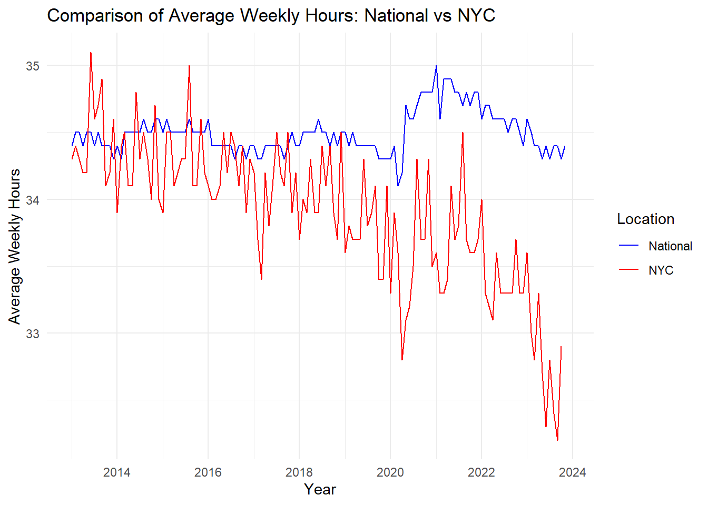

3.1.1 First dataset: NY figures only (all_data_NY.csv)
N.B. The following section is used to combine 5 datasets into one, we counldn’t however keep it as executable code since it would require us to upload very heavy datasets, which Github didn’t allow.
Code
library(dplyr)
Attaching package: 'dplyr'
The following objects are masked from 'package:stats':
filter, lag
The following objects are masked from 'package:base':
intersect, setdiff, setequal, union
Code
library(GGally)
Warning: package 'GGally' was built under R version 4.3.2
Loading required package: ggplot2
Registered S3 method overwritten by 'GGally':
method from
+.gg ggplot2
The following objects are masked from 'package:base':
date, intersect, setdiff, union
Code
options(warn=-1)target_occupations =c("All Occupations","Computer and Mathematical Occupations","Computer Occupations", "Computer and Information Analysts", "Computer Systems Analysts", "Information Security Analysts", "Computer and Information Research Scientists", "Computer Support Specialists", "Computer Network Support Specialists", "Computer User Support Specialists","Database Administrators and Architects","Database and Network Administrators and Architects", "Computer Network Architects", "Database Administrators", "Database Architects", "Network and Computer Systems Administrators", "Software and Web Developers, Programmers, and Testers", "Computer Programmers", "Software Developers", "Software Quality Assurance Analysts and Testers", "Web Developers", "Web and Digital Interface Designers", "Miscellaneous Computer Occupations", "Computer Occupations, All Other","Data Scientists","Statisticians")
The “all_data_NY.csv” dataset is a compilation of 5 datasets from the the U.S Bureau of Labor Statistics (Source: https://www.bls.gov/oes/tables.htm). Only rows pertinent to NY were included.
Code
# ### Second dataset: NY, CA and national figures (all_data_multi.csv)# ```{r}# # Creating a dataset including CA and the national average# # # Getting a list of NY and CA areas# NY_areas = all_data_2021$AREA_TITLE[all_data_2021$PRIM_STATE == "NY"] |> unique()# CA_areas = all_data_2021$AREA_TITLE[all_data_2021$PRIM_STATE == "CA"] |> unique()# # # # Compiling datasets for NY and CA and US per year# all_data_2022_Multi = all_data_2022 |> subset(PRIM_STATE %in% c("NY","CA", "US"))# all_data_2021_Multi = all_data_2021 |> subset(PRIM_STATE %in% c("NY","CA","US"))# all_data_2020_Multi = all_data_2020 |> subset(PRIM_STATE %in% c("NY","CA","US"))# all_data_2019_Multi = all_data_2019 |> subset(AREA_TITLE %in% c(CA_areas, NY_areas, "U.S."))# all_data_2018_Multi = all_data_2018 |> subset(AREA_TITLE %in% c(CA_areas, NY_areas, "U.S."))# # # Adding the missing PRIM_STATE variable to the 2019 and 2018 datasets# all_data_2019_Multi = all_data_2019_Multi |> mutate(PRIM_STATE = case_when(# AREA_TITLE %in% NY_areas ~ "NY",# AREA_TITLE %in% CA_areas ~ "CA",# AREA_TITLE == "U.S." ~ "US"# ))# # all_data_2018_Multi = all_data_2018_Multi |> mutate(PRIM_STATE = case_when(# AREA_TITLE %in% NY_areas ~ "NY",# AREA_TITLE %in% CA_areas ~ "CA",# AREA_TITLE == "U.S." ~ "US"# ))# # # # Getting a list of common column names so we can combine the datasets# common_columns_multi = Reduce(intersect, list(names(all_data_2022_Multi),names(all_data_2021_Multi),names(all_data_2020_Multi),names(all_data_2019_Multi),names(all_data_2018_Multi)))# # all_data_multi = rbind(all_data_2022_Multi[common_columns_multi], all_data_2021_Multi[common_columns_multi], all_data_2020_Multi[common_columns_multi], all_data_2019_Multi[common_columns_multi], all_data_2018_Multi[common_columns_multi])# # # Pre-processing the all_data_NY dataset# all_data_multi$A_MEDIAN = gsub(",", "", all_data_multi$A_MEDIAN) |> as.numeric()# all_data_multi$A_MEAN = gsub(",", "", all_data_multi$A_MEAN) |> as.numeric()# all_data_multi$TOT_EMP = gsub(",", "", all_data_multi$TOT_EMP) |> as.numeric()# # # Unifying labels for all_data_multi# all_data_multi$OCC_TITLE[grepl("Software Developers", all_data_multi$OCC_TITLE)] = "Software Developers"# all_data_multi$OCC_TITLE[grepl("Data Scientists", all_data_multi$OCC_TITLE)] = "Data Scientists"# all_data_multi$OCC_TITLE[grepl("Database", all_data_multi$OCC_TITLE)] = "Database Administrators and Architects"# # # Subseting the data to include only target occupations# all_data_multi = all_data_multi |> subset(OCC_TITLE %in% target_occupations)# # # This dataset contains information for NY, CA and the US in general (for the interactive graph)# #all_data_multi |> write.csv(file = "all_data_multi.csv", row.names = FALSE)
The “all_data_multi.csv” dataset is a compilation of 5 datasets from the the U.S Bureau of Labor Statistics (Source: https://www.bls.gov/oes/tables.htm). Only rows pertinent to NY, CA and national averages were included.
3.2 Results: Average Weekly Work Hours
Code
# Load the data from the CSV fileAverage_weekly_nyc <-read.csv("data/NYC average weekly hours.csv")Average_weekly_national <-read.csv("data/Average weekly hours of all employees, total private, seasonally adjusted-national.csv")Average_weekly_nyc <-select(Average_weekly_nyc, -Annual)Average_weekly_national_long <- Average_weekly_national |>pivot_longer(cols =-Year, names_to ="Month", values_to ="Hours") |>mutate(Location ="National")Average_weekly_nyc_long <- Average_weekly_nyc |>pivot_longer(cols =-Year, names_to ="Month", values_to ="Hours") |>mutate(Location ="NYC")combined_data <-rbind(Average_weekly_national_long, Average_weekly_nyc_long)combined_data <-subset(combined_data, Year >=2013)month_levels <-c("Jan", "Feb", "Mar", "Apr", "May", "Jun", "Jul", "Aug", "Sep", "Oct", "Nov", "Dec")combined_data$Month <-factor(combined_data$Month, levels = month_levels)combined_data$Date <-as.Date(paste(combined_data$Year, combined_data$Month, "01", sep ="-"), format ="%Y-%b-%d")combined_data <- combined_data |>mutate(Quarter =case_when( Month %in%c("Jan", "Feb", "Mar") ~"Q1", Month %in%c("Apr", "May", "Jun") ~"Q2", Month %in%c("Jul", "Aug", "Sep") ~"Q3", Month %in%c("Oct", "Nov", "Dec") ~"Q4" ))ggplot(combined_data, aes(x = Date, y = Hours, color = Location)) +geom_line()+#geom_smooth(method = "loess", se = FALSE, span = 0.4)+theme_minimal() +labs(title ="Comparison of Average Weekly Hours: National vs NYC", x ="Year", y ="Average Weekly Hours") +scale_color_manual(values =c("blue", "red"))

Through this graph, we can see that over the last decade, the average weekly hours in NYC has been in a slight decline, getting below the national average at around 2016. While the national average weekly hours rate remains almost stagnant at around 34hr/week, the weekly hours rate for NYC declines year-over-year.
3.3 Results: Salary Figures Insights
Code
nyc_weekly_earnings <-read.csv("data/nyc_weekly_earnings.csv")for (col inc("Jan", "Feb", "Mar", "Apr", "May", "Jun", "Jul", "Aug", "Sep", "Oct", "Nov" , "Dec", "Annual")) { nyc_weekly_earnings[[col]] <-as.numeric(gsub("[\\$,]", "", nyc_weekly_earnings[[col]]))}nyc_weekly_earnings <-subset(nyc_weekly_earnings, Year >=2013)nyc_weekly_earnings <- nyc_weekly_earnings |> dplyr::select(-Annual)national_weekly_earnings <-read.csv("data/Average weekly earnings of all employees, total private, seasonally adjusted-national.csv")
Code
nyc_weekly_earnings <-pivot_longer(nyc_weekly_earnings, cols =-Year, names_to ="Month", values_to ="Value")national_weekly_earnings <-pivot_longer(national_weekly_earnings, cols =-Year, names_to ="Month", values_to ="Value")nyc_weekly_earnings$Location <-"New York City"national_weekly_earnings$Location <-"National"weekly_earnings <-rbind(nyc_weekly_earnings, national_weekly_earnings)weekly_earnings$Date <-as.Date(paste(weekly_earnings$Year, weekly_earnings$Month, "01", sep ="-"), format ="%Y-%b-%d")weekly_earnings <- weekly_earnings |>mutate(PercentChange =c(((Value -lag(Value)) /lag(Value)) *100))weekly_earnings <-na.omit(weekly_earnings)ggplot(weekly_earnings, aes(x = Date, y = Value, color = Location)) +geom_line() +labs(title ="NYC vs. National Average Weekly Income Over Time",x ="Date",y ="Average Weekly Income ($)")+theme_linedraw()+scale_x_date(date_breaks ="2 year", date_labels ="%b %Y")+scale_y_continuous(breaks =seq(800, 1450, by =50))+theme(plot.title =element_text(hjust =0.5))
We can notice that the National Average weekly salary is much lower than the NYC average weekly salary. However, we can also see that the NYC average is much more volatile with the national average continuously increasing steadily.In recent months it appears that the national average weekly salary is increasing more than NYC as the NYC salary appears to have almost leveled off in the past year.
Code
weekly_earnings <- weekly_earnings |>mutate(PercentChange =c(((Value -lag(Value)) /lag(Value)) *100))subsampled_df <- weekly_earnings |>slice(seq(1, n(), by =2))subsampled_df <-na.omit(subsampled_df)ggplot(subsampled_df, aes(x = Date, y = PercentChange, color = Location)) +geom_line() +labs(title ="Percent Change in NYC vs. National Average Weekly Income Over Time",x ="Date",y ="Percent Change in Average Weekly Income (%)")+theme_linedraw()+scale_x_date(date_breaks ="2 year", date_labels ="%b %Y")+theme(plot.title =element_text(hjust =0.5))
Here we are looking at the percent change over time for both the NYC average weekly salary and the national average weekly salary. This further proves how volatile and seasonal NYC salaries can be. Furthermore, this does show that the national average may be growing faster than the NYC national average over the past few months but this can still be quite hard to read and at first glance looks like currently, NYC salaries are increasing faster than the national average.
Code
nyc_weekly_earnings$Difference <- nyc_weekly_earnings$Value - national_weekly_earnings$Valuenyc_weekly_earnings$Date <-as.Date(paste(nyc_weekly_earnings$Year, nyc_weekly_earnings$Month, "01", sep ="-"), format ="%Y-%b-%d")nyc_weekly_earnings <-na.omit(nyc_weekly_earnings)ggplot(nyc_weekly_earnings, aes(x = Date, y = Difference)) +geom_line() +labs(title ="Difference Between NYC and National Average Weekly Earnings Over Time",x ="Date",y ="Average Weekly Income ($)")+theme_linedraw()+scale_x_date(date_breaks ="2 year", date_labels ="%b %Y")+theme(plot.title =element_text(hjust =0.5))
In order to further visualize this and get a better understanding of whether the national salary is truly catching up with NYC salaries, we plotted the difference between the NYC and nation average weekly salary. Here you can clearly see there is a current downward trend as it appears the rest of the country is increasing their salaries comparatively to NYC. However, NYC remains having, on average, a weekly salary of a little over $200 more than the rest of the country.
Code
NYC_stats <-read.csv("data/NYC Employment Statistics.csv")NYC_stats <- NYC_stats |> dplyr::select(c(YEAR, INDUSTRY_TITLE, JUN))NYC_stats <-subset(NYC_stats, INDUSTRY_TITLE %in%c("Information", "Telecommunications","Financial Activities", "Financial Investments and Related Activities including Financial Vehicles", "Professional and Business Services", "Professional, Scientific, and Technical Services", "Computer Systems Design and Related Services", "Management, Scientific, and Technical Consulting Services", "Scientific Research and Development Services", "Advertising, Public Relations, and Related Services", "Government"))NYC_stats$NYC_Values <- NYC_stats$JUNNYC_stats$Year <- NYC_stats$YEARNYC_stats <- NYC_stats |> dplyr::select(-JUN)NYC_stats <- NYC_stats |> dplyr::select(-YEAR)NYC_stats <-subset(NYC_stats, Year >=2013)NYC_stats$NYC_Values <-as.numeric(NYC_stats$NYC_Values)
Code
telecoms <-read.csv("data/Telecommunications-national.csv")SciRe <-read.csv("data/Scientific research and development-national.csv")ProSciTech <-read.csv("data/Professional,scientific,and technical services-national.csv")ProBuss <-read.csv("data/Professional and Business Services-national.csv")ManSciTech <-read.csv("data/Management, scientific, and technical consulting services-national.csv")Info <-read.csv("data/Information(news) - national.csv")Gov <-read.csv("data/Government-national.csv")FinInv <-read.csv("data/Financial Investments-national.csv")FinAct <-read.csv("data/Financial Activities-national.csv")CompSys <-read.csv("data/Computer systems design and related services-national.csv")Advert <-read.csv("data/Advertising, public relations, and related services-national.csv")telecoms$INDUSTRY_TITLE <-"Telecommunications"SciRe$INDUSTRY_TITLE <-"Scientific Research and Development Services"ProSciTech$INDUSTRY_TITLE <-"Professional, Scientific, and Technical Services"ProBuss$INDUSTRY_TITLE <-"Professional and Business Services"ManSciTech$INDUSTRY_TITLE <-"Management, Scientific, and Technical Consulting Services"Info$INDUSTRY_TITLE <-"Information"Gov$INDUSTRY_TITLE <-"Government"FinInv$INDUSTRY_TITLE <-"Financial Investments and Related Activities including Financial Vehicles"FinAct$INDUSTRY_TITLE <-"Financial Activities"CompSys$INDUSTRY_TITLE <-"Computer Systems Design and Related Services"Advert$INDUSTRY_TITLE <-"Advertising, Public Relations, and Related Services"national_stats <-rbind(telecoms, SciRe, ProSciTech, ProBuss, ManSciTech, Info, Gov, FinInv, FinAct, CompSys, Advert)national_stats <- national_stats |> dplyr::select(c(Year, INDUSTRY_TITLE, Jun))national_stats <-pivot_longer(national_stats, cols =-c(Year, INDUSTRY_TITLE), names_to ="Month", values_to ="National_Values")national_stats <- national_stats |> dplyr::select(-Month)
Code
NYC_stats_wide <-spread(NYC_stats, key = Year, value = NYC_Values)national_stats_wide <-spread(national_stats, key = Year, value = National_Values)NYC_stats_wide$Location <-"New York City"national_stats_wide$Location <-"National"national_stats_wide$"2018"<- (national_stats_wide$"2018"/162210) *100NYC_stats_wide$"2018"<- (NYC_stats_wide$"2018"/4262.878) *100national_stats_wide$"2019"<- (national_stats_wide$"2019"/163073) *100NYC_stats_wide$"2019"<- (NYC_stats_wide$"2019"/4261.786) *100national_stats_wide$"2020"<- (national_stats_wide$"2020"/159900) *100NYC_stats_wide$"2020"<- (NYC_stats_wide$"2020"/4061.283) *100national_stats_wide$"2021"<- (national_stats_wide$"2021"/161192) *100NYC_stats_wide$"2021"<- (NYC_stats_wide$"2021"/4116.222) *100national_stats_wide$"2022"<- (national_stats_wide$"2022"/164002) *100NYC_stats_wide$"2022"<- (NYC_stats_wide$"2022"/4099.68) *100national_stats_wide$"2023"<- (national_stats_wide$"2023"/166951) *100NYC_stats_wide$"2023"<- (NYC_stats_wide$"2023"/4184.884) *100stats <-rbind(NYC_stats_wide, national_stats_wide)ggparcoord(NYC_stats_wide, columns =c(7:12), groupColumn =1) +labs(title ="Potential Industries Labor Force Share in NYC", x ="Years", y ="Potential Industries Labor Force Share in %", color ="Industry")
This plot shows the percent share of the labor force each potential industry that might hire a data scientist has in NYC over time. This shows, working in scientific research and even computer systems is not a very large portion of the NYC labor forces. This means if you’re interested in these sectors you may find larger companies elsewhere. But we believe the biggest takeaway from this graph is an idea on the most prevalent industries in NYC, mainly Business services. In other words, Business services have a large employee base here and if we wish to work in that sector, NYC may be our best option. Furthermore, when we see an increase in the percentage of the labor force over time, that means those industries are hiring, so along with being the largest proportion, business services companies are also hiring.
Code
ggparcoord(stats, columns =c(7:12), groupColumn =13, title = ) +labs(title ="Comparing NYC Potential Industries Labor Force Percent\nShare vs. National", x ="Years", y ="Potential Industries Labor Force Percent Share in %", color ="Scope")
Here we are comparing the same industries percent share of the labor force in NYC against their share of the labor force in the United States. This gives us an idea if there are industries that are larger than average or smaller than average. When reading this, you can see many of the blue lines are about the same if not above the red lines, giving us an indication that many of the industries we chose are either average size compared nationally or above average size, making an argument that NYC is a good location to be hired in these industries as they employ a large amount of the labor force comparatively to national averages.
3.4 Results: Data Science Mean Salary in Comparison to a Set of Tech Jobs
Code
# Reading the datasetsall_data_NY =read.csv("data/all_data_NY.csv")all_data_multi =read.csv("data/all_data_multi.csv")# Cleveland dot plot of average annual salaries for tech positions in NY for 2022.mean_salaries <- all_data_NY[all_data_NY$YEAR =="2022"& all_data_NY$OCC_TITLE %in% target_occupations,] |>group_by(OCC_TITLE) |>summarise(Mean_Annual_Salary =mean(A_MEAN))ggplot(mean_salaries, aes(x = Mean_Annual_Salary, y =reorder(OCC_TITLE, Mean_Annual_Salary ))) +geom_point(size =3) +geom_point(data =subset(mean_salaries, OCC_TITLE =="Data Scientists"), color ="red", size =3) +labs(title ="Mean Annual Salaries for Tech Positions in NY\nfor 2022",x ="Mean Annual Salary in $",y ="Occupation" )
The Cleveland plot above shows the mean annual salaries for a set of tech jobs in NY state for 2022. One of the important criteria we consider when it comes to choosing a career path is compensation. With “Data Scientist” being on the top of our lists, this graph gave us an idea of what an average data scientist should expect as a salary in NY in 2022. In comparison to the set of observed tech jobs, we see that data science positions’ salaries lay almost in the middle. So while an average data scientist’s salary is around 40k USD above the average salary in NY (“All Positions”), and around 30k USD above an average Web Developer’s salary, it is still less than the average salary for a Software Developer. Out of the list, the average salary for a Research Scientist is the highest, which is expected considering the selectivity of such positions.
Code
# Parallel axis plot for the Mean Annual Salary for Tech Jobs across NY State 2019-2022focus_occupations =c("Data Scientists" , "Computer Programmers" , "Statisticians" , "Software Developers", "Database Administrators and Architects", "Computer and Information Research Scientists", "Software Quality Assurance Analysts and Testers" )all_data_NY[all_data_NY$OCC_TITLE %in% focus_occupations,] |>group_by(YEAR, OCC_TITLE) |>summarise(Mean_Annual_Salary =mean(A_MEAN , na.rm =TRUE)) |>pivot_wider(names_from = YEAR, values_from = Mean_Annual_Salary) |>ggparcoord(columns =3:6, groupColumn =1, scale ="globalminmax", missing ="mean", ) +labs(title ="The Mean Annual Salary for Tech Jobs across NY State,\n2019-2022 ", x ="Years", y ="Mean Annual Income in $", color ="Occupation")
`summarise()` has grouped output by 'YEAR'. You can override using the
`.groups` argument.
When comparing the progress of the mean annual salary for a data scientist in comparison to a set of tech jobs, we notice that it took the sharpest dive between 2019 and 2022. While the mean annual salary for a statistician or a software developer grew consistently year-over-year over the 3 years period, the average salary for a data scientist took a dive between 2019 and 2020 and remained almost stagnant between 2020 and 2022.
Code
# Parallel axis plot for the Mean Annual Salary for DATA Scientists and Software Developers in Different Regions of NY, 2019-2022all_data_NY[all_data_NY$OCC_TITLE %in%c("Data Scientists", "Software Developers"),] |>group_by(YEAR, AREA_TITLE, OCC_TITLE) |>summarise(Mean_Annual_Salary =mean(A_MEAN)) |>pivot_wider(names_from = YEAR, values_from = Mean_Annual_Salary) |>ggparcoord(columns =4:7, groupColumn =2, showPoints =TRUE, scale ="globalminmax" ) +labs(title ="The Mean Annual Salary for DATA Scientists and Software Developers\nin Different Regions of NY, 2019-2022 ", x ="Years", y ="Mean Annual Income in $", color ="Occupation")
`summarise()` has grouped output by 'YEAR', 'AREA_TITLE'. You can override
using the `.groups` argument.
If we focused on two occupations out of the bunch: “Data Scientists” and “Software Developers”, and detailed their mean annual salaries figures into mean annual salaries per region of the state of NY, we would notice a contradictory trend to what we saw in the previous plot. For data science positions, only two regions of the state of NY have recorded consistent figures relating to the occupation’s mean annual salary. Therefore, we can attribute the acute drop in the mean average salary that we noticed in the previous plot to data inconsistencies. When observing this plot, we see that the mean annual salary for a data scientist is actually growing over the 3 years period, following a similar trend to “Software Developers” (although the latter appears to have a higher rate of growth).
3.5 Results: Progress of Data Science Job Openings in Regions of the State of NY
Code
# Faceted plot of Total number of Employees per Tech job across NY State Regionsall_data_NY[all_data_NY$OCC_TITLE %in%c("Data Scientists", "Software Developers", "Statisticians"),] |>group_by(YEAR, AREA_TITLE, OCC_TITLE) |>summarise(Mean_TOT_EMP =mean(TOT_EMP)) |>ggplot( aes(x=as.numeric(YEAR), y=Mean_TOT_EMP, fill=OCC_TITLE)) +geom_area() +facet_wrap(~ AREA_TITLE, scales ="free_y") +theme(plot.margin =margin(0, 0, 0, 0, "cm")) +theme(axis.text.x =element_text(angle =90, vjust =0.5, hjust =1), strip.text =element_text(size =8)) +labs(title ="Total number of Employees per Tech job across NY\nState Regions", x ="Years", y ="Number of Employees", fill ="Occupation")
`summarise()` has grouped output by 'YEAR', 'AREA_TITLE'. You can override
using the `.groups` argument.
The purpose of this faceted plot is to showcase the proportion of data scientist jobs created year-over-year in different regions of the state of NY. That is, we want to see which regions of the state of NY knew some progress in terms of data science job openings. With “Software Developers” and “Statisticians” as a reference, we see that in many regions such as Rochester and New York Metropolitan area, data science openings are increasing yearly, making these regions suitable potential destinations for fresh graduates.